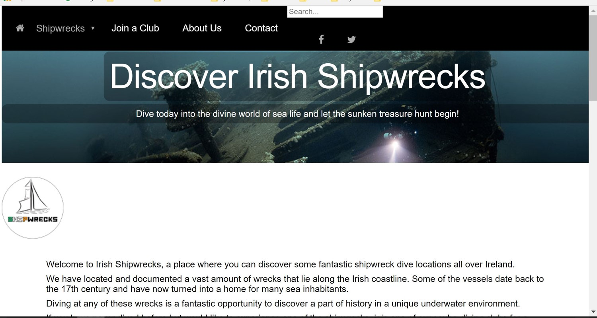

by Ulrika
by Ulrika
The goal of this individual assignment was to create a responsive website about OP Art style. Link to the website
This is the moodboard about OP Art Style.
Since the OP Art itself is very intensive in colors, the background color of my web site will be white, the background of the logo and main heading will be grey. For titles and borders I will use colors which nicely resonate with artwork pictures.

I drew the name of my domain in Op Art style. I called my web site "So Perfect", because all good intentions, all good ideas, every good person is perfect, perfect with all their imperfections.
This is the interactive prototype for mobile version of the page.
Link to the redesigned website
The goal of this group assignment was to redesign a poorly looking website "Irish Shipwrecks".
We began by surveying users to find out what we already new - the page is unclear, difficult to navigate, and visually unestetique.
The team created a style tile and logo.
Based on wireframes and a style tile, interactive prototype was made.
This is the screenshot of the new redesigned page and the link to it.
